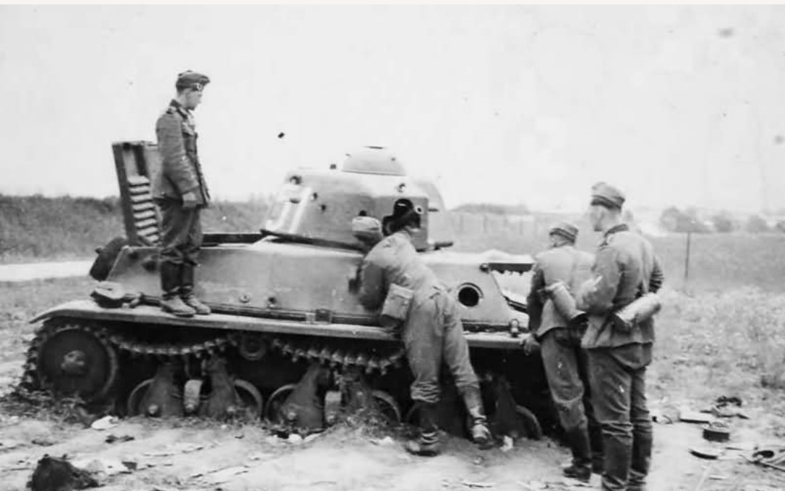
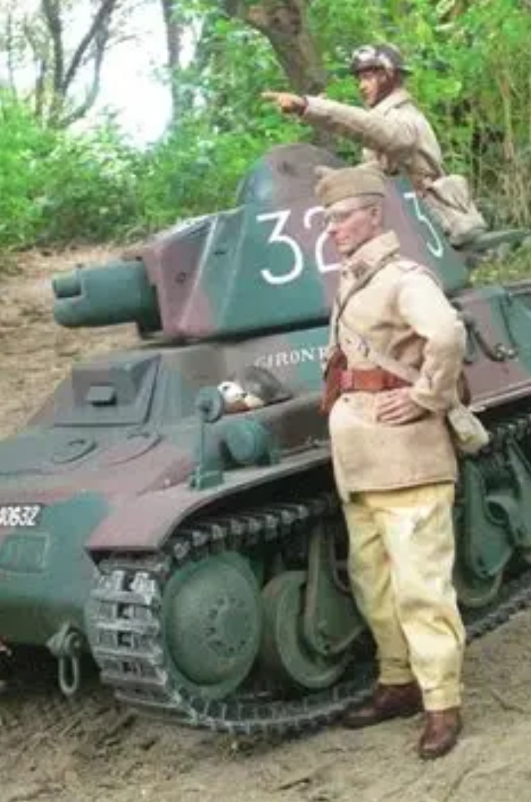
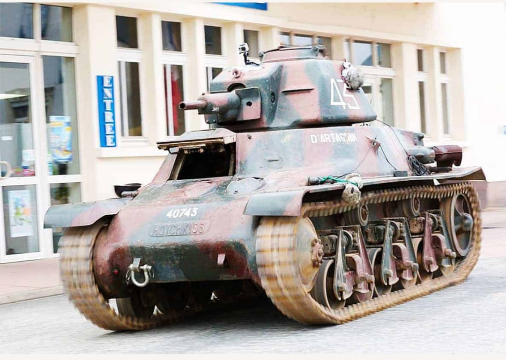

Cette fiche présente un char léger français de l’entre‑deux‑guerres, conçu pour l’appui rapproché de l’infanterie et la reconnaissance. Les informations ci‑dessous sont exposées dans un cadre strictement historique et documentaire, conformément aux exigences muséales de neutralité et de contextualisation.
Le Hotchkiss H39 est l’évolution modernisée du H35 : moteur plus puissant, mobilité accrue et canon SA38 nettement supérieur. Il s’inscrit dans la doctrine française de 1935–1940, fondée sur des chars légers robustes, compacts et produits en grand nombre pour équiper les bataillons de chars d’infanterie.
Le Hotchkiss H39 est une évolution du H35, doté d’un moteur plus puissant et, surtout, du canon SA38, bien supérieur au SA18 précédent. Compact, rapide et robuste, il constitue l’un des chars légers les plus efficaces de l’armée française en 1939–1940.

Le H39 conserve la silhouette compacte du H35, mais bénéficie d’un moteur plus puissant permettant d’atteindre 36 km/h. Son blindage reste modeste, mais sa mobilité et sa petite taille en font un char difficile à toucher.

Le canon SA38 de 37 mm, monté sur la majorité des H39, offre une pénétration bien supérieure à celle du H35. Il permet au H39 de lutter efficacement contre les Panzer I et II, et même de menacer les Panzer III du début de la campagne.

Plusieurs Hotchkiss H39 ont été restaurés et exposés dans des musées. Leur camouflage tricolore, leurs marquages d’époque et leur train de roulement caractéristique permettent de comprendre l’évolution des chars légers français avant la défaite de 1940.
Après la défaite française de juin 1940, l’armée allemande récupère de nombreux Hotchkiss H39 encore en état. Repeints, renumérotés et modifiés, ils sont intégrés sous la désignation Panzerkampfwagen 38H 735(f). C’est pour cette raison que certaines photos montrent des H39 portant des croix allemandes : ce sont des chars français réutilisés par l’occupant.
Page du Musée HOP WW2 – Section véhicules français